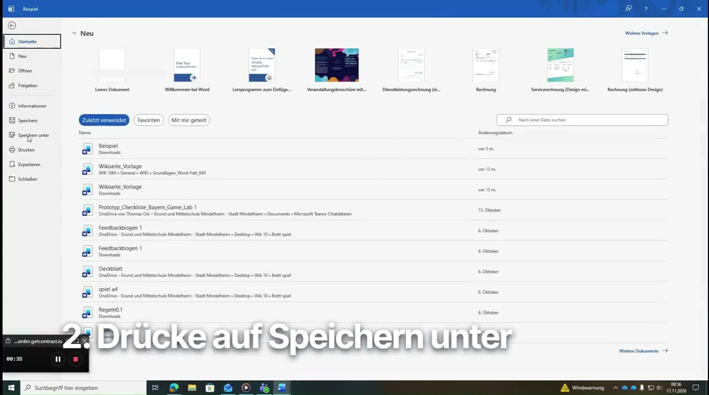
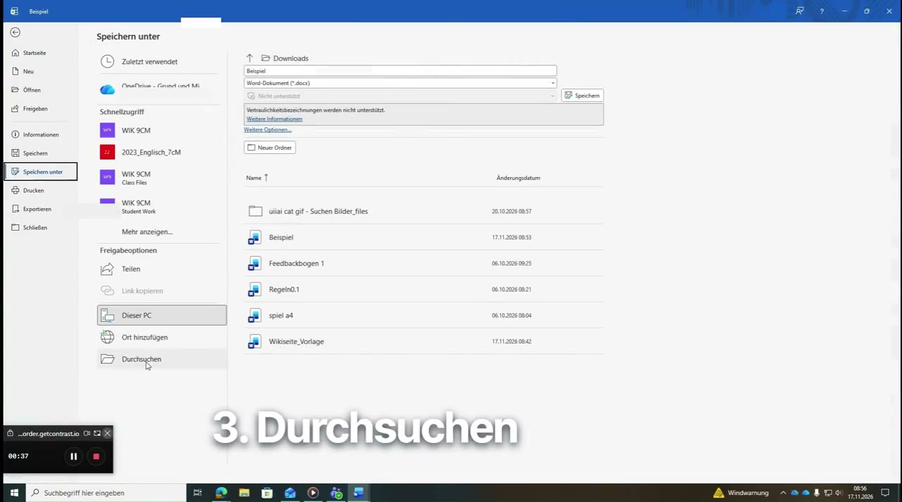
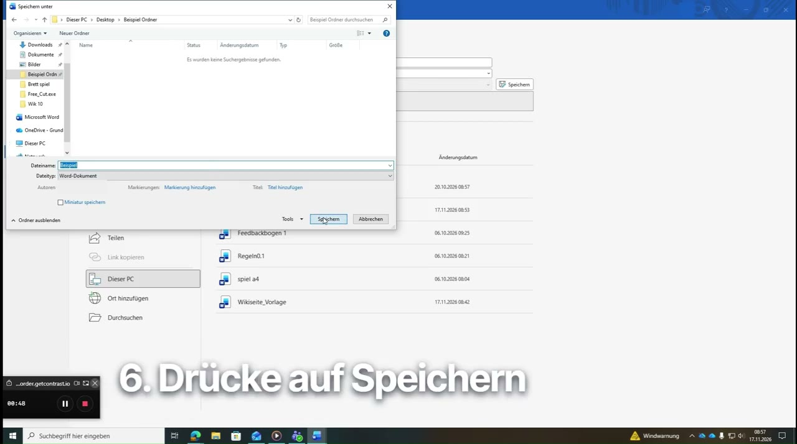

Datei speichern
aus dem WIK-Wiki, dem Nachschlagewerk der Klasse 10M
Erklärvideo, 30 Sekunden, mit Musik | |
| Bereich | Windows |
|---|---|
| Autor | KM |
| Fassung | v1 |
Wie man eine Datei richtig speichert und wieder findet.
1 Anleitung
1. Drücke auf Datei

2. Drücke auf Speichern unter


3. Durchsuchen


4. Suche den Ordner, in dem du die Datei speichern willst

5. Drücke auf Speichern


2 Typische Fehler und Tipps
- Falsch speichern
- Die Datei nicht mehr finden
Kategorien: Windows